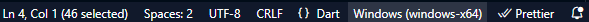
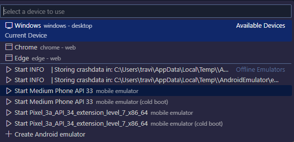

Flutter is a cross-platform framework for building mobile applications, developed by Google. In this tutorial, we will create a simple Flutter app using Visual Studio Code (VSCode). Our demo app will consist of a button that, when pressed, changes the background color of the app to a random color.
To follow along with this tutorial, you will need:
You can download and install Visual Studio Code from here, and Flutter SDK installation instructions can be found here.
For detailed guidance on installing Flutter on Windows, you can watch this helpful video tutorial: Installing Flutter on Windows.
Once you have Flutter installed, configure it in Visual Studio Code by following this video tutorial: Setting Up Flutter in VSCode.
Open VSCode and create a new Flutter project by running flutter create color_changer_app.
Open the color_changer_app folder in VSCode.
To define the UI for the color changer app, navigate to the lib/main.dart file. In this file, we'll create the main entry point for our app and set up the UI structure.
class ColorChangerApp extends StatelessWidget {
@override
Widget build(BuildContext context) {
return MaterialApp(
home: Scaffold(
appBar: AppBar(
title: Text('Color Changer'),
),
body: ColorChanger(), // Here we use the ColorChanger widget to display the color changing functionality
),
);
}
}
To implement the color changing functionality, create a stateful widget called ColorChanger. This widget will contain a button. When the button is pressed, it generates a random color and updates the background color of the app.
class ColorChanger extends StatefulWidget {
@override
_ColorChangerState createState() => _ColorChangerState();
}
class _ColorChangerState extends State {
Color _backgroundColor = Colors.white;
void _changeColor() {
setState(() {
int red = Random().nextInt(256);
int green = Random().nextInt(256);
int blue = Random().nextInt(256);
_backgroundColor = Color.fromRGBO(red, green, blue, 1.0);
});
}
@override
Widget build(BuildContext context) {
return Container(
color: _backgroundColor,
child: Center(
child: ElevatedButton(
onPressed: _changeColor,
child: Text('Change Color'),
style: ElevatedButton.styleFrom(
padding: EdgeInsets.symmetric(horizontal: 20, vertical: 10),
),
),
),
);
}
}
In lib/main.dart you can call the widget created in the same file.
void main() {
runApp(ColorChangerApp());
}
To run the Flutter app:
Select a device by clicking the device on the bottom right hand corner of the screen.
When this button is clicked a drop down menu will appear at the top of the screen. Select your device.
Start the debugger by clicking on the "Start Debugging" button in the Run toolbar or pressing F5.
Your app will run and allow you to debug as necessary.
In this tutorial, we've created a simple Flutter app using Visual Studio Code. The app consists of a button that changes the background color to a random color when pressed. This tutorial serves as a starting point for building more complex Flutter applications.
For further study, you can explore advanced Flutter topics such as state management, navigation, and integrating with APIs.
You can find the complete source code for this tutorial on GitHub.
You can also find a more complex Flutter project that implements more widgets and Firebase at GitHub/Compare App.